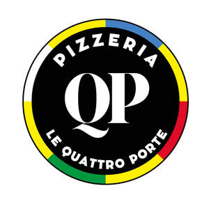

Trade Mark Journal No.2025/028 11 July 2025
UK00004227337 1 July 2025 (30)

escription: The trademark consists of the words “QP PIZZERIA” and “LE QUATTRO PORTE” displayed within a circular emblem. The central characters "QP" are stylized in a large, serif font. The words “PIZZERIA” and “LE QUATTRO PORTE” appear in capital letters surrounding the central letters, forming part of the border. The circular border is outlined with four coloured segments: blue, yellow, green, and red. The mark is used in relation to the preparation, cooking, sale, and delivery of traditional Italian pizzas and related food and drink products, as well as restaurant and takeaway services. Limitation: This trademark is used in connection with restaurant services, takeaway and food delivery services, preparation and sale of Italian-style pizzas and associated food items, non-alcoholic beverages, and branding for packaging and promotional materials.
Disclaimer: The applicant disclaims any exclusive rights to the word “PIZZERIA” except as part of the composite trademark “QP PIZZERIA LE QUATTRO PORTE.” The term “PIZZERIA” is commonly used in the food and restaurant industry and is not claimed for exclusive use apart from the mark as a whole.
- Class 30
- Pizza; Pizza pies; Pizza crusts; Pizza crust; Pizzas; Pizza sauce; Pizza dough; Pizza sauces; Gluten-free pizza; Frozen pizza; Pizza flour; Frozen pizza crusts; Fresh pizza; Pizza spices; Pizza bases; Pizza mixes; Frozen pizza crusts made of cauliflower; Uncooked pizzas; Pizza dough mix; Frozen pizzas; Sauces for pizzas; Chilled pizzas; Pre-baked pizzas crusts; Prepared pizza meals; Fresh pizzas; Calzones; Hamburger sandwiches; Lasagna; Cheeseburgers [sandwiches]; Pizzas [prepared]; Pasta for incorporating into pizzas; Breadsticks; Pasta salad; Preserved pizzas; Pasta; Kebab sauce; Pie crusts; Toasted cheese sandwich; Chicken sandwiches; Pasta sauce; Chicken pies; Truffle pasta; Sandwiches; Frankfurter sandwiches; Sandwich wraps [bread]; Nachos; Sushi; Meat pies; Pies (Meat -); Taco sauce; Toasted cheese sandwich with ham; Prepared meals in the form of pizzas; Preparations for making pizza bases; Hamburgers in buns; Cream pies; Soda bread; Ice cream sandwiches; Chocolate for toppings; Sopapillas [fried bread]; Sauces for use with pasta; Sauces for pasta; Pasta sauces; Hamburgers contained in bread buns; Hamburgers being cooked and contained in a bread roll; Pies; Lasagne; Naan bread; Macaroni salad; Taco chips; Spaghetti and meatballs; Spaghetti with meatballs; Hot dog sandwiches; Pasta dishes; Hamburgers contained in bread rolls; Wholemeal pasta; Burgers contained in bread rolls; Hot sausage and ketchup in cut open bread rolls; Pita bread; Stuffed pasta; Turkey sandwiches; Frozen yogurt pies; Cheese sauce; Sandwiches containing hamburgers; Burritos; Ravioli; Fish sandwiches; Vegetable pies; Macaroni with cheese; Macaroni cheese; Chickpea pasta; Frozen brownie dough; Toasted sandwiches; Fried dough cookies; Ziti; Pesto [sauce]; Salad cream; Gluten-free bread; Ice-cream cakes; Spaghetti sauce; Lomper [potato-based flatbread]; Fresh pasta; Blueberry pies; Canned spaghetti in tomato sauce; Lentil pasta.
ARTUR BUSHI